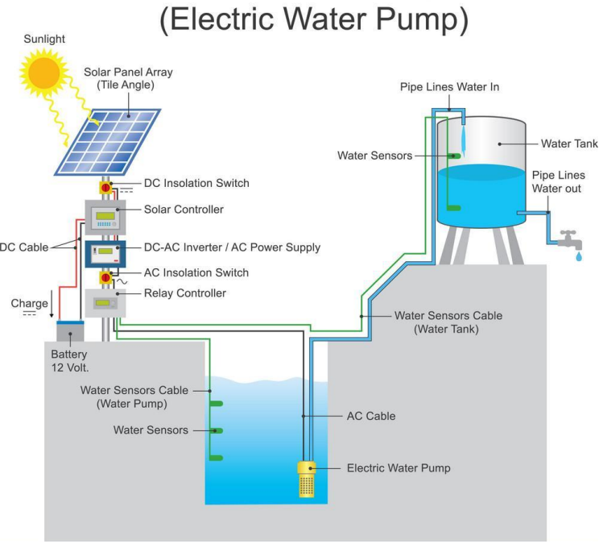
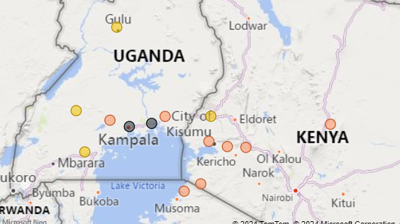
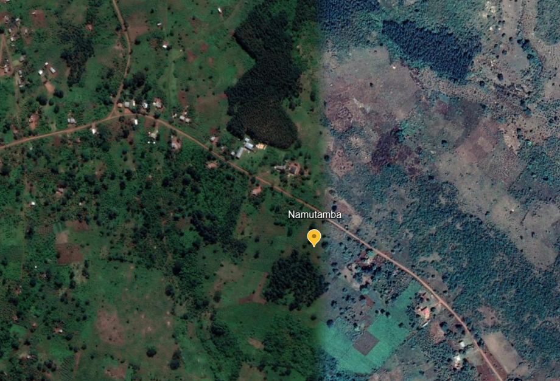

Microgrid Design and Simulation: Solar Pumping
GROUP NAMES: Thomas Hudson, Zhen-Yu, Yen-Chun
Project Type: Solar Pumping
October 31, 2024
Contents
Solar Pumping Microgrid - Description and Overview
This microgrid project includes non-grid supplied power systems for domestic water supply and electrical lighting serving a small community in Uganda.
In Uganda clean, potable water is often attained from vertical boreholes where aquifers are available. Hand pump kiosks allow for manual extraction of water but this is not effective for larger communities where community members face long wait times (figure 1).

Figure 1: People waiting to pump water.
This microgrid project develops electric power to pump domestic water from a borehole to a water storage tank. Figure 2 shows a general solar pumping diagram.

Figure 2: General components for solar water pumping.
Microgrid design permaeters for our community are based on an Engineering Without Borders 2020 implementation report by the Penn State University chapter of Engineers Without Borders. The chapter worked with the community of Namutamba for several years to understand design requirements such as daily water volume requirements and water storage.
Water storage is required for buffering against cloudy days when the microgrid power source for water pumping is not available.
This microgrid project includes electrical power and electrical storage requirements to serve a small school house. Electrical stroage is required for inclement weather where daily power resources fall below average.
Microgrid projects (non-grid tied) with similar designs are implemented by Engineers Without Borders chapters in a number of African countries. Figure 3 shows solar projects in Uganda and Kenya where each colored circle indicates a solar installation. Reasons for solar adoption are solar can be more reliable than grid power, less expensive than grid power, and solar can be erected where needed.

Figure 3: EWB Solar Installation Projects.
Satellite images (figure 4) show large open areas that favor solar installation sites. The community is low density with few structurs and land use includes agriculture. The Pen State University chapter has completed reports describing the demographic and socioeconomic profiles for the community.

Figure 4: Satelite image of Uganda community.
The community is located at:
- latitude: 0.5345
- longitude: 32.0877